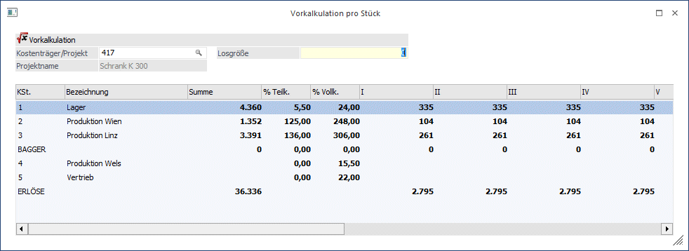
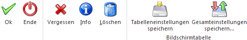
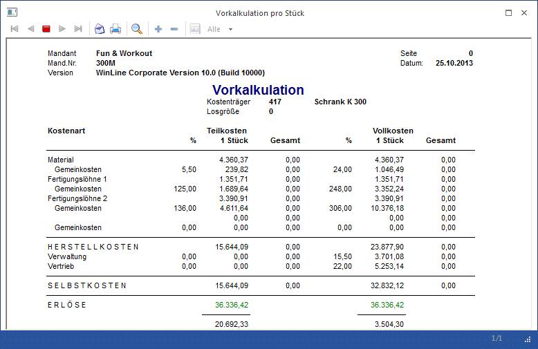

Die Vorkalkulation pro Stück finden Sie im Menüpunkt
1 Auswertungen
1 Vorkalkulation pro Stück
Diese Funktion dient lediglich dazu, die für eine Einheit des Kostenträgers eingegebenen Kosten und Zuschlagssätze auf eine beliebige Losgröße hochzurechnen (wenn 1 Stück x kostet, was kosten dann 37 Stück).
Die Daten werden nur in der Kalkulationstabelle abgespeichert und haben keinen Zusammenhang zur Kostenträger-Budgetierung, die im Kostenträgerstamm vorgenommen werden kann (und die die eigentliche Budgetierung bis hinunter auf Kostenarten und Eingaben pro Periode darstellt, und die auch in allen anderen Budgetauswertungen und -vergleichen herangezogen wird).
Bei Produktionskostenstellen können die Einzelkosten in Summe pro Kostenstelle budgetiert werden, bei Verwaltungskostenstellen nur der Gemeinkostenzuschlagsprozentsatz (der beim ersten Aufruf aus dem Kostenstellenstamm abgerufen und angezeigt wird). Der GK-Zuschlagssatz kann natürlich für alle Kostenstellen zu Teilkosten und zu Vollkosten editiert werden.

Ø Kostenträger/Projekt
Hier geben Sie die Kostenträgernummer ein, die Sie budgetieren möchten. Außerdem wird geprüft, ob der Benutzer die Berechtigung hat (WinLine KORE/Stammdaten/Kostenträger), den eingegebenen Kostenträger zu verwenden.
Ø Losgröße
Hier geben Sie die Anzahl der Einheiten an, auf die das eingegebene Budget hochgerechnet werden soll (linear).
Buttons

Ø OK
Mit diesem Button werden die eingegebenen Werte abgespeichert.
Ø Ende
Dieser Button schließt das Fenster (Achtung: wenn Sie die Werte nicht verlieren wollen, müssen sie vorher gespeichert werden).
Ø Vergessen
Schließt die Erfassungstabelle, geänderte Werte werden NICHT gespeichert, das Fenster bleibt aber geöffnet.
Ø Info
Gibt die Vorkalkulation am Bildschirm aus.
Ø Löschen
Die für das Projekt gespeicherten Werte werden gelöscht (hat nichts mit dem im Kostenträgerstamm hinterlegten Budget zu tun, dieses bleibt davon unberührt).
Ø Tabelleneinstellungen speichern
Die Spalten einer Tabelle können grundsätzlich an beliebige Positionen verschoben, bzw. in der Breite entsprechend angepasst werden. Durch Anwahl des Buttons "Tabelleneinstellungen speichern" werden die Einstellungen benutzerspezifisch gespeichert und bei dem nächsten Aufruf des Programmpunktes wieder vorgeschlagen.
Ø Gesamteinstellungen speichern
Im Gegensatz zu "Tabelleneinstellungen speichern" können mit "Gesamteinstellungen speichern" mehrere Tabellenaufbauten gespeichert und nach Wunsch geladen werden. Zusätzlich werden Sonderfunktionen der Tabelle (z.B. "Spalte gruppieren") ebenfalls bei der Speicherung bedacht.
